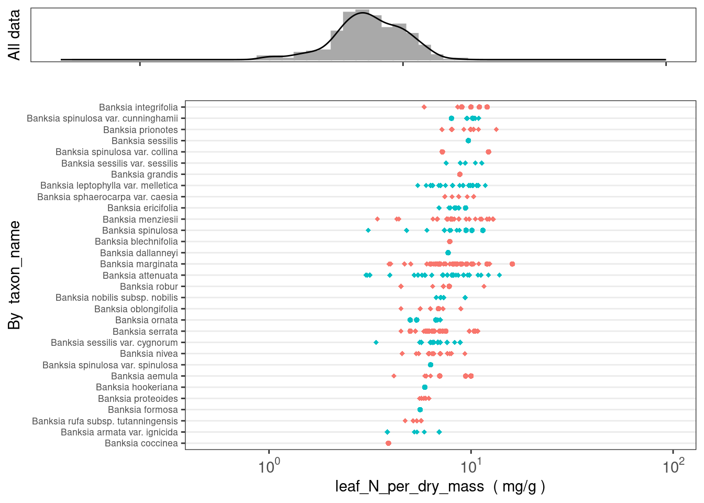
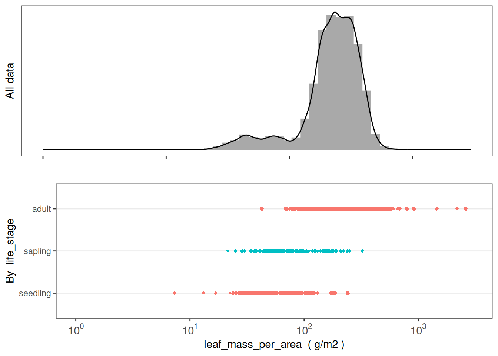
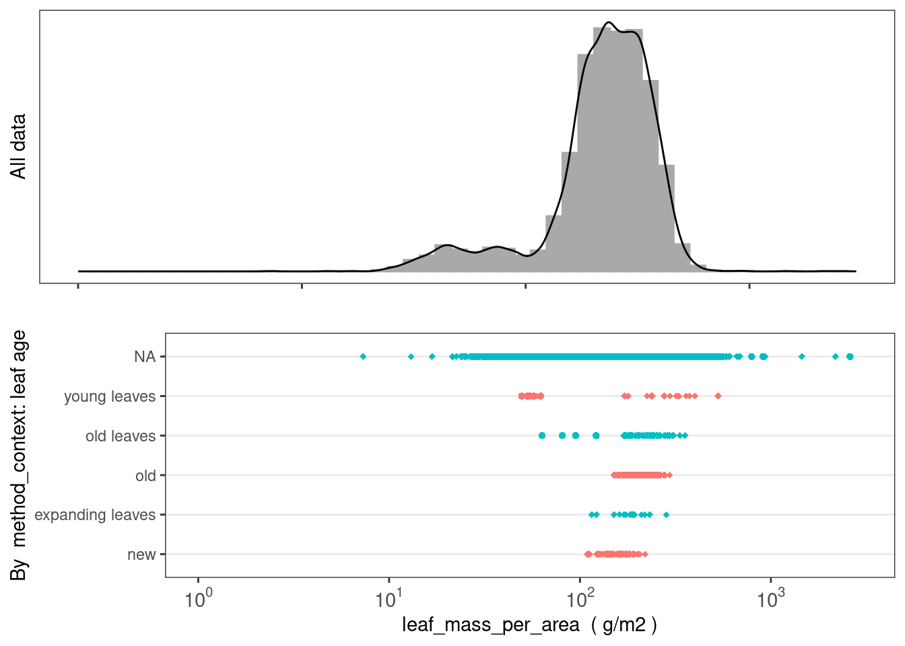
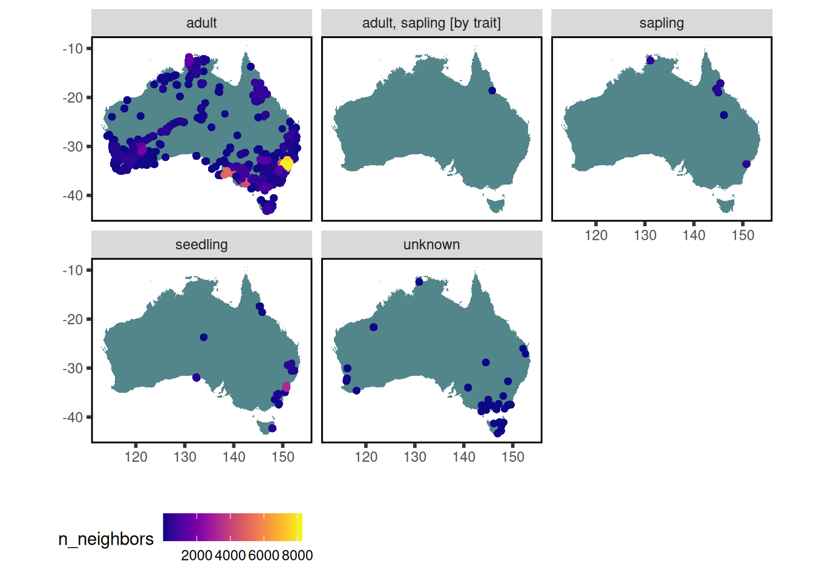
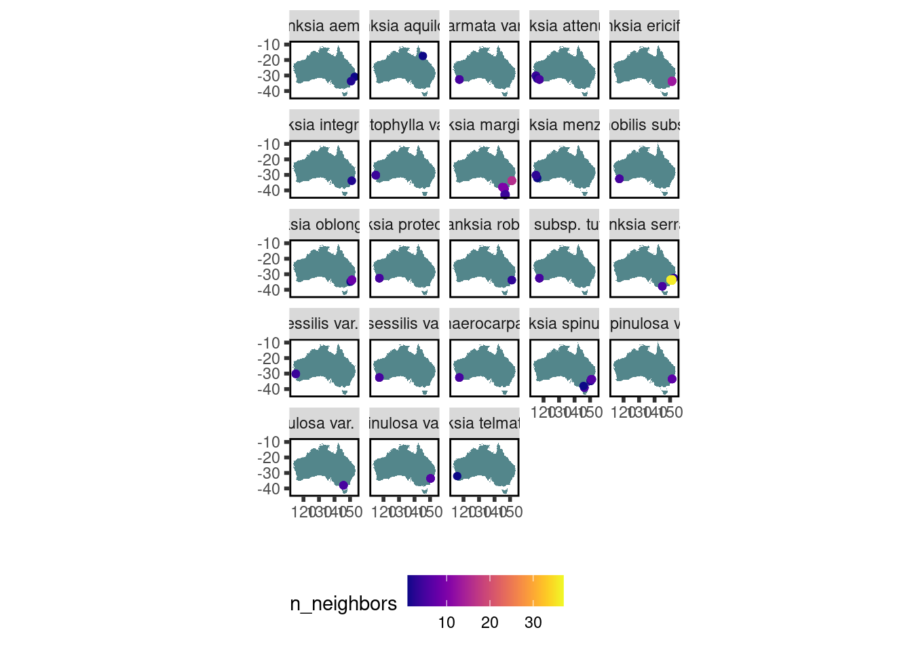
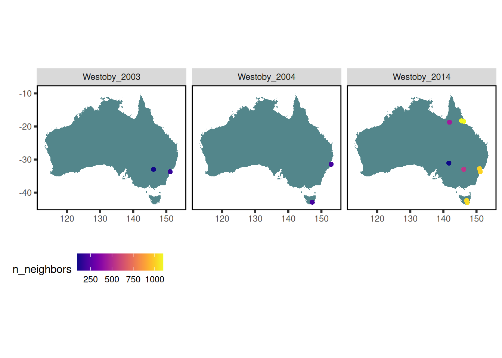
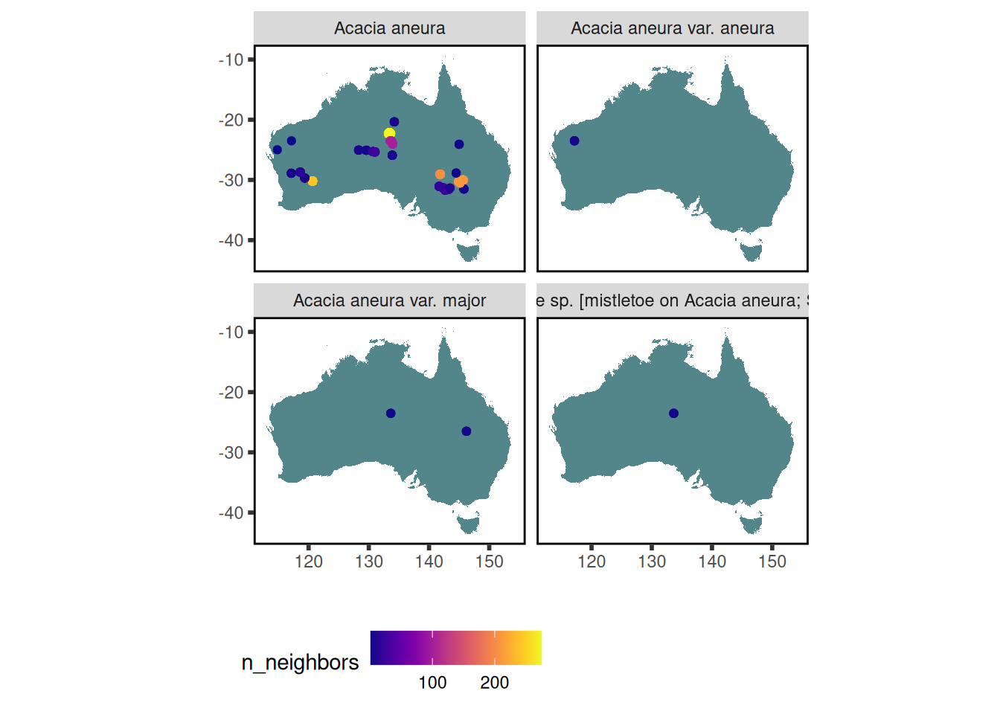
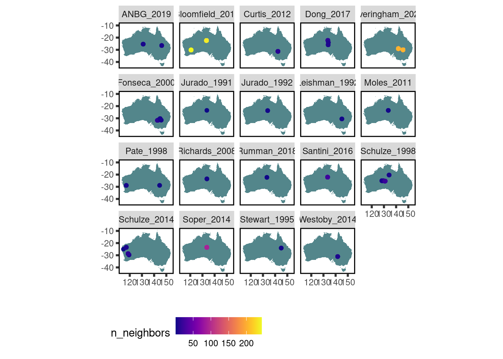

# Packages need to be installed the first time you use them.
# They are commented out here, so they aren't reinstalled each time you run the code,
# but install any packages you require the first time you run this tutorial.
#install.packages("readr", "tidyr", "dplyr", "stringr", "remotes")
library(readr)
library(tidyr)
library(dplyr)
library(stringr)
#remotes::install_github("traitecoevo/austraits", dependencies = TRUE, upgrade = "ask")
#remotes::install_github("traitecoevo/traits.build", dependencies = TRUE, upgrade = "ask")
library(austraits) # functions for exploring a traits.build database, available at Github repo
# XX library(traits.build) # additional functions for exploring a traits.build database, available at Github repo
#source("https://raw.githubusercontent.com/traitecoevo/traits.build-book/master/data/extra_functions.R")
source("data/extra_functions.R")30 AusTraits tutorial
30.1 Introduction
With more than 1.8 million data records, AusTraits is Australia’s largest plant trait database, created using the {traits.build} R package
This tutorial introduces:
additional examples of analyses using the database
To access more information about traits.build, see traits.build-book
Or you can visit the Github repositories for individual packages/data repos:
the database structure:
traits.buildthe database contents:
austraits.buildan R package for exploring and wrangling the data:
austraits
30.2 Download AusTraits data
Before you begin, download and source essential packages and functions.
Then download (or build) the latest AusTraits database, using one of the methods described here.
This tutorial uses the most recent AusTraits release, version 6.0.0
most_recent <- austraits::get_versions() %>%
dplyr::pull("doi") %>%
dplyr::first()
most_recent[1] "10.5281/zenodo.11188867"austraits <- austraits::load_austraits(doi = most_recent)Downloading AusTraits to 'data/austraits'Loading data from 'data/austraits/austraits-6.0.0.rds'30.3 A first look at data
If you’re not familiar with AusTraits, you may want to begin by exploring the breadth and depth of data within the database. The database can be explored by trait name, species, or genus using either austraits functions or dplyr functions.
How many taxa have leaf_N_per_dry_mass data in AusTraits?
(austraits %>%
austraits::extract_trait(trait_name = "leaf_N_per_dry_mass"))$traits %>%
dplyr::distinct(taxon_name) %>% nrow()[1] 2230How are these data distributed across datasets?
austraits::plot_trait_distribution_beeswarm(database = austraits, trait_name = "leaf_N_per_dry_mass", y_axis_category = "dataset_id")
How much data exist for other nitrogen traits?
austraits::lookup_trait(austraits, "_N_") -> N_traits
austraits %>%
austraits::extract_trait(trait_name = N_traits) %>%
austraits::summarise_database(var = "trait_name") %>%
dplyr::arrange(-n_taxa)# A tibble: 16 × 5
trait_name n_records n_dataset n_taxa percent_total
<chr> <int> <int> <int> <dbl>
1 leaf_N_per_dry_mass 11314 87 2230 0.657
2 leaf_N_per_area 3726 30 708 0.216
3 leaf_senesced_N_per_dry_mass 542 9 81 0.0315
4 wood_N_per_dry_mass 539 8 69 0.0313
5 bark_N_per_dry_mass 413 5 49 0.024
6 seed_N_per_seed_dry_mass 47 6 42 0.00273
7 leaf_rubisco_N_per_total_leaf_N 68 1 29 0.00395
8 leaf_thylakoid_N_per_total_leaf_N 70 1 29 0.00407
9 stem_N_per_dry_mass 157 3 28 0.00912
10 fruit_N_per_dry_mass 31 5 22 0.0018
11 leaf_cell_wall_N_per_cell_wall_dry_… 29 1 22 0.00168
12 leaf_cell_wall_N_per_leaf_N 29 1 22 0.00168
13 root_N_per_dry_mass 141 4 22 0.00819
14 leaf_N_resorption 86 1 14 0.005
15 wood_dead_N_per_dry_mass 9 3 7 0.000523
16 flower_N_per_dry_mass 10 2 2 0.000581How many “hydraulic” traits are in AusTraits? How much data exist for these traits?
austraits::lookup_trait(austraits, "hydraulic") -> hydraulic_traits
austraits %>%
austraits::extract_trait(trait_name = hydraulic_traits) %>%
austraits::summarise_database(var = "trait_name") %>%
dplyr::arrange(-n_taxa)# A tibble: 10 × 5
trait_name n_records n_dataset n_taxa percent_total
<chr> <int> <int> <int> <dbl>
1 stem_vessel_diameter_hydraulic 741 9 264 0.285
2 sapwood_specific_hydraulic_conducti… 419 9 179 0.161
3 leaf_specific_hydraulic_conductivity 472 9 168 0.181
4 sapwood_specific_hydraulic_conducti… 343 6 164 0.132
5 leaf_specific_hydraulic_conductance 81 2 79 0.0311
6 stem_hydraulic_conductivity 261 5 51 0.1
7 hydraulic_safety_margin_50 46 2 31 0.0177
8 hydraulic_safety_margin_88 40 2 26 0.0154
9 leaf_hydraulic_vulnerability 20 1 20 0.00768
10 stem_specific_hydraulic_conductivity 181 3 14 0.0695 Where have trait data for Acacia aneura been collected?
data <-
austraits %>%
austraits::extract_taxa(taxon_name = "Acacia aneura") %>%
austraits::join_location_coordinates()
data$traits %>% austraits::plot_locations("taxon_name")
Where have data for Hibbertia species been collected?
data <-
austraits %>%
austraits::extract_taxa(genus = "Hibbertia") %>%
austraits::join_location_coordinates() %>%
austraits::join_taxa(var = "genus")
data$traits %>% austraits::plot_locations("genus")
30.4 The database structure
The {traits.build} R package is the workflow that builds AusTraits from its component datasets.
The database is output as a list, a collection of relational tables, described in detail here.
A traits.build data object includes both the relational data tables and additional tables documenting database metadata and a traits dictionary.
austraits── This is 6.0.0 of AusTraits: a curated plant trait database for the Australianℹ This database is built using traits.build version 1.1.0.9000ℹ This database contains a total of 1726024 records, for 33494 taxa and 497
traits.── This object is a 'list' with the following components: ──• traits: A table containing measurements of traits.• locations: A table containing observations of location/site characteristics
associated with information in `traits`. Cross referencing between the two
dataframes is possible using combinations of the variables `dataset_id`,
`location_name`.• contexts: A table containing observations of contextual characteristics
associated with information in `traits`. Cross referencing between the two
dataframes is possible using combinations of the variables `dataset_id`,
`link_id`, and `link_vals`.• methods: A table containing details on methods with which data were
collected, including time frame and source. Cross referencing with the `traits`
table is possible using combinations of the variables `dataset_id`,
`trait_name`.• excluded_data: A table of data that did not pass quality test and so were
excluded from the master dataset.• taxonomic_updates: A table of all taxonomic changes implemented in the
construction of AusTraits. Changes are determined by comapring against the APC
(Australian Plant Census) and APNI (Australian Plant Names Index).• taxa: A table containing details on taxa associated with information in
`traits`. This information has been sourced from the APC (Australian Plant
Census) and APNI (Australian Plant Names Index) and is released under a CC-BY3
license.• contributors: A table of people contributing to each study.• sources: Bibtex entries for all primary and secondary sources in the
compilation.• definitions: A copy of the definitions for all tables and terms. Information
included here was used to process data and generate any documentation for the
study.• schema: A copy of the schema for all tables and terms. Information included
here was used to process data and generate any documentation for the study.• metadata: Metadata associated with the dataset, including title, creators,
license, subject, funding sources.• build_info: A description of the computing environment used to create this
version of the dataset, including version number, git commit and R
session_info.ℹ To access a component, try using the $ e.g. austraits$traitsTraits table
The core AusTraits table is the traits table. It is in “long” format, with each row documenting a single trait measurement.
austraits$traits %>% dplyr::slice(1:20)# A tibble: 20 × 26
dataset_id taxon_name observation_id trait_name value unit entity_type
<chr> <chr> <chr> <chr> <chr> <chr> <chr>
1 ABRS_1981 Acanthocarpus c… 0001 leaf_comp… simp… <NA> species
2 ABRS_1981 Acanthocarpus c… 0001 seed_leng… 3 mm species
3 ABRS_1981 Acanthocarpus h… 0002 leaf_comp… simp… <NA> species
4 ABRS_1981 Acanthocarpus p… 0003 leaf_comp… simp… <NA> species
5 ABRS_1981 Acanthocarpus p… 0004 leaf_comp… simp… <NA> species
6 ABRS_1981 Acanthocarpus p… 0004 seed_leng… 4 mm species
7 ABRS_1981 Acanthocarpus p… 0004 seed_leng… 5 mm species
8 ABRS_1981 Acanthocarpus r… 0005 leaf_comp… simp… <NA> species
9 ABRS_1981 Acanthocarpus r… 0006 leaf_comp… simp… <NA> species
10 ABRS_1981 Acanthocarpus r… 0006 seed_leng… 2.5 mm species
11 ABRS_1981 Acanthocarpus v… 0007 leaf_comp… simp… <NA> species
12 ABRS_1981 Acer pseudoplat… 0008 leaf_phen… deci… <NA> species
13 ABRS_1981 Acidonia microc… 0009 leaf_comp… comp… <NA> species
14 ABRS_1981 Callitris acumi… 0010 leaf_comp… simp… <NA> species
15 ABRS_1981 Callitris arena… 0011 leaf_comp… simp… <NA> species
16 ABRS_1981 Callitris pyram… 0012 leaf_comp… simp… <NA> species
17 ABRS_1981 Adenanthos acan… 0013 leaf_comp… simp… <NA> species
18 ABRS_1981 Adenanthos apic… 0014 leaf_comp… simp… <NA> species
19 ABRS_1981 Adenanthos apic… 0014 leaf_leng… 5 mm species
20 ABRS_1981 Adenanthos apic… 0014 leaf_leng… 20 mm species
# ℹ 19 more variables: value_type <chr>, basis_of_value <chr>,
# replicates <chr>, basis_of_record <chr>, life_stage <chr>,
# population_id <chr>, individual_id <chr>, repeat_measurements_id <chr>,
# temporal_context_id <chr>, source_id <chr>, location_id <chr>,
# entity_context_id <chr>, plot_context_id <chr>, treatment_context_id <chr>,
# collection_date <chr>, measurement_remarks <chr>, method_id <chr>,
# method_context_id <chr>, original_name <chr>The columns include:
- core columns
- dataset_id
- taxon_name
- trait_name
- value (trait value)
- dataset_id
- entity metadata
- entity_type
- life_stage
- entity_type
- value metadata
- value_type
- unit
- basis_of_value
- replicate
- basis_of_record
- value_type
- additional metadata
- collection_date
- measurement_remarks
- identifiers for specific observations, individuals, etc.
- observation_id
- individual_id
- population_id
- repeat_measurements_id
- observation_id
- identifiers that provide links to ancillary tables with additional metadata
- location_id
- treatment_context_id
- plot_context_id
- entity_context_id
- temporal_context_id
- method_context_id
- method_id
- source_id
- location_id
Ancillary data tables
The remaining metadata accompanying each trait record is recorded across multiple relational tables.
These include:
- austraits$locations
- austraits$contexts
- austraits$methods
- austraits$taxa
- austraits$taxonomic_updates
- austraits$contributors
Like the core traits table, each is in ‘long’ format.
The tables locations, contexts, methods, taxa and taxonomic_updates include metadata that links seamlessly to individual rows within traits.
A collection of join_ functions within austraits join the ancillary tables to the traits table, based on columns shared across tables.
| table | metadata in table | columns that link to austraits$traits |
|---|---|---|
| locations | location name, location properties, latitude, longitude | dataset_id, location_id |
| contexts | context name, context category (method context, temporal, entity context, plot, treatment), context property | dataset_id, link_id (identifier to link to: method_context_id, temporal_context_id, entity_context_id, plot_context_id, treatment_context_id), link_vals (identifier value to link to) |
| methods | dataset description, dataset sampling strategy, trait collection method, data collectors, data curators, dataset citation, source_id & citation | dataset_id, trait_name, method_id |
| taxa | genus, family, scientific name, APC/APNI taxon concept/taxon name identifiers | taxon_name |
| taxonomic_updates | original name (name submitted), aligned name (typos removed; standardised syntax), identifiers for aligned name | dataset_id, taxon_name, original_name |
| contributors | people who contributed data, including their ORCIDs, affiliations, roles | dataset_id |
30.5 Exploring AusTraits
With 1726024 rows of trait values in the main traits table, knowing how to explore the contents is essential.
The R package {austraits} offers a collection of functions to explore and wrangle AusTraits data – or indeed any data using the traits.build format.
An austraits package vignette is available here.
Function categories include:
summarise and lookup functions: These functions offer summaries by taxon name or trait, summarising taxa per trait (or other variable), datasets per trait, and observations per trait.
filtering functions: These functions begin with the word
extractand filter all of the relational tables simultaneously.join functions: These functions allow columns from the relational tables to be joined to the core traits table.
pivot functions: These functions allow the traits table to be pivoted to wide format.
plotting functions: These functions offer a means of rapidly visualising AusTraits data, either plotting collection locations on a map of Australia or plotting trait values by dataset.
austraits.R function reference
Reference guide to: austraits functions
Summarising data: data coverage
There are two function families for summarising AusTraits data:
- lookup_()
- summarise_database()
Use the function summarise_database to output summaries of total records, datasets with records, and taxa with records across families, genera or traits:
austraits::summarise_database(database = austraits, var = "trait_name") %>% dplyr::slice(100:130)# A tibble: 31 × 5
trait_name n_records n_dataset n_taxa percent_total
<chr> <int> <int> <int> <dbl>
1 flower_pollen_length 701 1 333 0.000406
2 flower_structural_carpels_count 1411 2 1003 0.000817
3 flower_structural_sex_type 1982 2 1675 0.00115
4 flower_style_differentiation 1656 2 1547 0.000959
5 flower_style_fusion 319 2 267 0.000185
6 flowering_cues 278 1 244 0.000161
7 flowering_time 33685 36 18710 0.0195
8 fruit_Ca_per_dry_mass 27 4 21 0.0000156
9 fruit_K_per_dry_mass 27 4 21 0.0000156
10 fruit_Mg_per_dry_mass 27 4 21 0.0000156
# ℹ 21 more rowsaustraits::summarise_database(database = austraits, var = "family") %>% dplyr::slice(1:20)# A tibble: 20 × 5
family n_records n_dataset n_taxa percent_total
<chr> <int> <int> <int> <dbl>
1 Acanthaceae 3719 57 149 0.00216
2 Achariaceae 162 14 3 0.0000939
3 Actinidiaceae 186 16 3 0.000108
4 Agapanthaceae 107 13 3 0.000062
5 Aizoaceae 5004 63 102 0.0029
6 Akaniaceae 123 16 1 0.0000713
7 Alismataceae 892 30 20 0.000517
8 Alliaceae 561 19 18 0.000325
9 Alseuosmiaceae 318 13 3 0.000184
10 Alstroemeriaceae 175 15 2 0.000101
11 Amaranthaceae 9873 85 267 0.00572
12 Amaryllidaceae 1400 38 56 0.000812
13 Anacardiaceae 2214 64 26 0.00128
14 Anarthriaceae 779 32 20 0.000452
15 Annonaceae 4172 50 62 0.00242
16 Aphanopetalaceae 193 23 3 0.000112
17 Apiaceae 12759 94 195 0.0074
18 Apocynaceae 16341 111 238 0.00947
19 Apodanthaceae 75 11 4 0.0000435
20 Aponogetonaceae 493 19 14 0.000286 austraits::summarise_database(database = austraits, var = "genus") %>% dplyr::slice(1:20)# A tibble: 20 × 5
genus n_records n_dataset n_taxa percent_total
<chr> <int> <int> <int> <dbl>
1 (Dockrillia 3 2 1 0.00000174
2 Abelia 16 4 1 0.00000928
3 Abelmoschus 271 19 8 0.000157
4 Abildgaardia 74 7 2 0.0000429
5 Abrodictyum 123 14 3 0.0000713
6 Abroma 39 7 2 0.0000226
7 Abrophyllum 181 19 3 0.000105
8 Abrotanella 183 18 4 0.000106
9 Abrus 202 26 3 0.000117
10 Abutilon 1975 52 54 0.00115
11 Acacia 109792 191 1558 0.0637
12 Acaciella 66 5 3 0.0000383
13 Acaena 1150 44 14 0.000667
14 Acalypha 561 20 14 0.000325
15 Acanthocarpus 986 22 9 0.000572
16 Acanthocereus 22 4 1 0.0000128
17 Acanthocladium 48 12 1 0.0000278
18 Acanthospermum 117 16 2 0.0000679
19 Acanthus 209 19 4 0.000121
20 Acer 221 14 4 0.000128 Since this function summarises the variable selected for ALL of AusTraits, you may want to first filter the data before summarising by “taxon_name” – or even “trait_name”.
Alternatively, you can look up traits that contain a specific search term:
austraits::lookup_trait(database = austraits, term = "leaf") %>% length()[1] 213austraits::lookup_trait(database = austraits, term = "leaf")[1:30] [1] "leaf_compoundness"
[2] "leaf_phenology"
[3] "leaf_length"
[4] "leaf_width"
[5] "leaf_margin"
[6] "leaf_shape"
[7] "leaf_lamina_posture"
[8] "leaf_base_shape"
[9] "leaf_lobation"
[10] "leaf_phyllotaxis"
[11] "leaf_glaucousness"
[12] "leaf_arrangement"
[13] "leaf_margin_posture"
[14] "leaf_pendulousness"
[15] "leaf_N_per_dry_mass"
[16] "leaf_area"
[17] "leaf_delta13C"
[18] "leaf_mass_per_area"
[19] "leaf_photochemical_reflectance_index"
[20] "leaf_water_band_index"
[21] "leaf_dry_matter_content"
[22] "leaf_thickness"
[23] "leaf_water_use_efficiency_intrinsic"
[24] "leaf_hairs_adult_leaves"
[25] "leaf_hydraulic_vulnerability"
[26] "leaf_specific_hydraulic_conductance"
[27] "leaf_turgor_loss_point"
[28] "leaf_NP_ratio"
[29] "leaf_N_per_area"
[30] "leaf_P_per_area" austraits::lookup_trait(database = austraits, term = "_N_") [1] "leaf_N_per_dry_mass"
[2] "leaf_N_per_area"
[3] "wood_N_per_dry_mass"
[4] "leaf_senesced_N_per_dry_mass"
[5] "bark_N_per_dry_mass"
[6] "fruit_N_per_dry_mass"
[7] "seed_N_per_seed_dry_mass"
[8] "stem_N_per_dry_mass"
[9] "wood_dead_N_per_dry_mass"
[10] "flower_N_per_dry_mass"
[11] "leaf_N_resorption"
[12] "leaf_cell_wall_N_per_cell_wall_dry_mass"
[13] "leaf_cell_wall_N_per_leaf_N"
[14] "root_N_per_dry_mass"
[15] "leaf_rubisco_N_per_total_leaf_N"
[16] "leaf_thylakoid_N_per_total_leaf_N" # elemental contents use their symbol and are *almost* always in the middle of a trait name
austraits::lookup_trait(database = austraits, term = "photo") [1] "plant_photosynthetic_organ"
[2] "leaf_photochemical_reflectance_index"
[3] "leaf_photosynthetic_nitrogen_use_efficiency_saturated"
[4] "leaf_photosynthetic_phosphorus_use_efficiency_saturated"
[5] "leaf_photosynthetic_rate_per_area_maximum"
[6] "leaf_photosynthetic_rate_per_area_saturated"
[7] "leaf_photosynthetic_rate_per_dry_mass_maximum"
[8] "leaf_photosynthetic_rate_per_dry_mass_saturated"
[9] "leaf_photosynthesis_Jmax_per_area_25C"
[10] "leaf_photosynthesis_Vcmax_per_area"
[11] "leaf_photosynthesis_Jmax_per_area"
[12] "leaf_photosynthetic_rate_per_area_ambient"
[13] "photosynthetic_pathway"
[14] "leaf_photosynthesis_Jmax_per_mass"
[15] "leaf_photosynthesis_Vcmax_per_mass"
[16] "leaf_photosynthetic_nitrogen_use_efficiency_maximum"
[17] "leaf_photosynthetic_phosphorus_use_efficiency_maximum"
[18] "leaf_photosynthesis_Jmax_over_Vcmax_25C"
[19] "leaf_photosynthesis_Vcmax_per_area_25C"
[20] "bark_photosynthetic_status" Also visit the AusTraits Plant Dictionary to learn more about the traits included in AusTraits, https://w3id.org/APD.
You can also search the locations and contexts tables for location_properties and/or context_properties included as metadata for many trait measurements:
austraits::lookup_location_property(database = austraits, term = "soil") [1] "soil type"
[2] "soil P, total (mg/kg)"
[3] "soil pH (H2O)"
[4] "soil P, SE total (mg/kg)"
[5] "soil clay (%)"
[6] "soil sand (%)"
[7] "soil silt (%)"
[8] "soil P, extractable (mg/kg)"
[9] "soil exchangeable Al (mg/kg)"
[10] "soil exchangeable Fe (mg/kg)"
[11] "soil organic carbon (%)"
[12] "soil pH (CaCl2)"
[13] "soil carbonates content (%)"
[14] "soil cation exchange capacity (cmol/kg)"
[15] "soil K (mg/kg)"
[16] "soil N, total (%)"
[17] "soil P, total"
[18] "soil pH"
[19] "soil P, description"
[20] "soil N, total (ppm)"
[21] "soil N, total (g/100g)"
[22] "soil bulk density (g/cm3)"
[23] "soil cation exchange capacity (meq/kg)"
[24] "soil conductivity (dS/m)"
[25] "soil depth to gravel or laterite (m)"
[26] "soil pH, 1-10 cm"
[27] "soil texture"
[28] "soil water holding capacity (v/v)"
[29] "soil C, total (%)"
[30] "soil nutrient summary"
[31] "soil"
[32] "soil Al (mg/kg)"
[33] "soil Ca (mg/kg)"
[34] "soil P, available (ppm)"
[35] "incubated soil NH4 content (mg/kg)"
[36] "soil N:P"
[37] "soil NH4 content (mg/kg)"
[38] "soil NO3 content"
[39] "soil TEB (cmol/kg)"
[40] "soil age"
[41] "soil disolved organic nitrogen"
[42] "soil exchangeable Al (cmol/kg)"
[43] "soil exchangeable Ca (cmol/kg, meq/100g)"
[44] "soil exchangeable Ca (mg/kg)"
[45] "soil exchangeable Fe (cmol/kg, meq/100g)"
[46] "soil exchangeable K (cmol/kg, meq/100g)"
[47] "soil exchangeable K (mg/kg)"
[48] "soil exchangeable Mg (cmol/kg, meq/100g)"
[49] "soil exchangeable Mg (mg/kg)"
[50] "soil exchangeable Mn (cmol/kg, meq/100g)"
[51] "soil exchangeable Mn (mg/kg)"
[52] "soil exchangeable Na (cmol/kg, meq/100g)"
[53] "soil exchangeable Na (mg/kg)"
[54] "soil Ca (cmol/kg)"
[55] "soil Fe (mg/kg)"
[56] "soil Mg (mg/kg)"
[57] "soil Mn (mg/kg)"
[58] "soil P, Olsen (mg/kg)"
[59] "soil P, Resin (mg/kg)"
[60] "soil organic content (%)"
[61] "soil organic matter (%)"
[62] "soil N, total (mg/g)"
[63] "soil temperature (C)"
[64] "soil nutrient status"
[65] "soil P, total ICP"
[66] "soil N, Kjeldahl (mg/kg)"
[67] "soil N, oxidised (mg/kg)"
[68] "soil water content (%)"
[69] "soil series"
[70] "soil K"
[71] "soil depth class"
[72] "soil morphology"
[73] "soil profile description"
[74] "soil texture (subsoil)"
[75] "soil texture (surface)"
[76] "soil C:N"
[77] "soil C:P"
[78] "soil notes" austraits::lookup_location_property(database = austraits, term = "temperature") [1] "temperature, max (C)" "temperature, MAT (C)"
[3] "temperature, mean summer max (C)" "temperature, mean winter max (C)"
[5] "temperature, max MAT (C)" "temperature, min MAT (C)"
[7] "temperature, mean winter min (C)" "temperature variation (C)"
[9] "temperature, monthly max (C)" "temperature, monthly min (C)"
[11] "soil temperature (C)" "temperature, mean daily max (C)"
[13] "temperature, mean daily min (C)" "temperature, mean yearly max (C)"
[15] "temperature, summer mean (C)" "temperature, winter mean (C)" austraits::lookup_context_property(database = austraits, term = "season")[1] "sampling season" "fire season" austraits::lookup_context_property(database = austraits, term = "fire")[1] "fire intensity" "fire history" "fire response type"
[4] "fire severity" "fire season" For instance, to just look at number of records, datasets, and taxa with data for nitrogen-related traits:
N_traits <- austraits %>%
austraits::extract_trait(trait_name = "_N_") %>%
austraits::summarise_database(var = "trait_name")30.6 Wrangling AusTraits
Filtering data
There are four austraits functions that filter data: extract_trait, extract_taxon or extract_dataset_id, and extract_data.
Each of these functions simultaneously filters all database tables to only include trait measurements (and associated metadata) meeting the specified criteria, retaining the original database structure.
Note, although the extract_ functions were explicitly developed to return the original traits.build database structure, they will also work when the “database” is just a single table, such as if prior manipulations have separated the traits table from the rest of the database.
extract_trait, extract_dataset and extract_taxa
Three of the functions extract data based on pre-set columns: 1. extract_trait filters by trait_name 2. extract_dataset filters by dataset_id 3. extract_taxa filters by taxon_name, genus or family
Search terms can either be exact or partial matches.
leaf_mass_per_area_data <-
austraits %>%
austraits::extract_trait(trait_names = c("leaf_mass_per_area"))
Westoby_2014_datasets <-
austraits %>%
austraits::extract_dataset("Westoby_2014")
all_Westoby_datasets <-
austraits %>%
austraits::extract_dataset("Westoby")
Eucalyptus_data <-
austraits %>%
austraits::extract_taxa(genus = "Eucalyptus")
Banksia_serrata_data <-
austraits %>%
austraits::extract_taxa(taxon_name = "Banksia serrata")extract_data
extract_data offers the ability of filtering the database based on a value(s) in any column of any of the seven data tables (traits, locations, contexts, methods, taxa, taxonomic_updates, contributors).
See the database structure chapter for names and definitions of each column and, for those with controlled vocabulary, their allowed values.
Alternatively to see the list of column names to use:
names(austraits$traits) [1] "dataset_id" "taxon_name" "observation_id"
[4] "trait_name" "value" "unit"
[7] "entity_type" "value_type" "basis_of_value"
[10] "replicates" "basis_of_record" "life_stage"
[13] "population_id" "individual_id" "repeat_measurements_id"
[16] "temporal_context_id" "source_id" "location_id"
[19] "entity_context_id" "plot_context_id" "treatment_context_id"
[22] "collection_date" "measurement_remarks" "method_id"
[25] "method_context_id" "original_name" names(austraits$methods) [1] "dataset_id" "trait_name"
[3] "methods" "method_id"
[5] "description" "sampling_strategy"
[7] "source_primary_key" "source_primary_citation"
[9] "source_secondary_key" "source_secondary_citation"
[11] "source_original_dataset_key" "source_original_dataset_citation"
[13] "data_collectors" "assistants"
[15] "dataset_curators" And to see the list of possible values for a column:
unique(austraits$traits$life_stage) [1] "adult" "sapling"
[3] "seedling" "adults"
[5] "adult, seedling" "unknown"
[7] "seedling, adult" "saplings"
[9] "seedling sapling adult" "juvenile"
[11] "adult juvenile" NA
[13] "adult, sapling [by trait]"unique(austraits$traits$basis_of_record) [1] "preserved_specimen" "field_experiment"
[3] "field" "lab"
[5] "field field_experiment" "literature field"
[7] "literature" "unknown"
[9] "captive_cultivated" "literature field field_experiment"
[11] "field lab" "field preserved_specimen"
[13] NA "field captive_cultivated" unique(austraits$locations$location_property)[1:20] [1] "latitude (deg)" "longitude (deg)"
[3] "aridity index (MAP/PET)" "precipitation, MAP (mm)"
[5] "temperature, max (C)" "locality"
[7] "recorded by" "description"
[9] "notes" "soil type"
[11] "temperature, MAT (C)" "population"
[13] "elevation (m)" "biome"
[15] "crown height, max (m)" "leaf area index"
[17] "soil P, total (mg/kg)" "climate description"
[19] "temperature, mean summer max (C)" "temperature, mean winter max (C)"unique(austraits$contexts$context_property)[1:20] [1] "trait scoring method" "entity_measured"
[3] "replicate observations" "entity measured"
[5] "sampling season" "measurement CO2"
[7] "seed provenance" "measurement irradiance"
[9] "repeat observations" "habitat flammability"
[11] "time to flowering type" "fire intensity"
[13] "groundwater requirement" "slope position"
[15] "plot elevation (m)" "inundation duration (days)"
[17] "fire history" "canopy layer"
[19] "drought treatment" "sampling time of day" The function then allows you to filter down to the components of each table that are relevant to the search criteria specified:
field_data <- austraits %>% austraits::extract_data(table = "traits", col = "basis_of_record", col_value = "field")
field_data$traits %>% head()# A tibble: 6 × 26
dataset_id taxon_name observation_id trait_name value unit entity_type
<chr> <chr> <chr> <chr> <chr> <chr> <chr>
1 Ahrens_2019 Corymbia caloph… 001 leaf_N_pe… 9 mg/g individual
2 Ahrens_2019 Corymbia caloph… 001 leaf_area 1288… mm2 individual
3 Ahrens_2019 Corymbia caloph… 001 leaf_delt… -27.… {del… individual
4 Ahrens_2019 Corymbia caloph… 001 leaf_mass… 185.… g/m2 individual
5 Ahrens_2019 Corymbia caloph… 001 leaf_phot… 0.02… {dim… individual
6 Ahrens_2019 Corymbia caloph… 001 leaf_wate… 1.06… {dim… individual
# ℹ 19 more variables: value_type <chr>, basis_of_value <chr>,
# replicates <chr>, basis_of_record <chr>, life_stage <chr>,
# population_id <chr>, individual_id <chr>, repeat_measurements_id <chr>,
# temporal_context_id <chr>, source_id <chr>, location_id <chr>,
# entity_context_id <chr>, plot_context_id <chr>, treatment_context_id <chr>,
# collection_date <chr>, measurement_remarks <chr>, method_id <chr>,
# method_context_id <chr>, original_name <chr>data_with_soils_data <- austraits %>% austraits::extract_data(table = "locations", col = "location_property", col_value = "soil")
data_with_soils_data$traits %>% head()# A tibble: 6 × 26
dataset_id taxon_name observation_id trait_name value unit entity_type
<chr> <chr> <chr> <chr> <chr> <chr> <chr>
1 Apgaua_2017 Aglaia meridion… 001 leaf_delt… -34.… {del… individual
2 Apgaua_2017 Aglaia meridion… 001 leaf_wate… 0.02… umol… individual
3 Apgaua_2017 Aglaia meridion… 001 sapwood_s… 14.6… kg/m… individual
4 Apgaua_2017 Aglaia meridion… 001 stem_vess… 71.0… {cou… individual
5 Apgaua_2017 Aglaia meridion… 001 stem_vess… 53.9… um individual
6 Apgaua_2017 Aglaia meridion… 001 stem_vess… 82.5… um individual
# ℹ 19 more variables: value_type <chr>, basis_of_value <chr>,
# replicates <chr>, basis_of_record <chr>, life_stage <chr>,
# population_id <chr>, individual_id <chr>, repeat_measurements_id <chr>,
# temporal_context_id <chr>, source_id <chr>, location_id <chr>,
# entity_context_id <chr>, plot_context_id <chr>, treatment_context_id <chr>,
# collection_date <chr>, measurement_remarks <chr>, method_id <chr>,
# method_context_id <chr>, original_name <chr>data_with_soils_data$locations %>% head() # all location properties are retained for the measurements for measurements for which at least location property pertains to soil# A tibble: 6 × 5
dataset_id location_id location_name location_property value
<chr> <chr> <chr> <chr> <chr>
1 Apgaua_2017 01 Daintree Rainforest Observato… description lowl…
2 Apgaua_2017 01 Daintree Rainforest Observato… latitude (deg) -16.…
3 Apgaua_2017 01 Daintree Rainforest Observato… longitude (deg) 145.…
4 Apgaua_2017 01 Daintree Rainforest Observato… precipitation, M… 4900
5 Apgaua_2017 01 Daintree Rainforest Observato… soil type high…
6 Apgaua_2017 01 Daintree Rainforest Observato… temperature, MAT… 24.4 data_contributed_by_Wright <- austraits %>% austraits::extract_data(table = "contributors", col = "last_name", col_value = "Wright")
data_contributed_by_Wright$traits %>% head()# A tibble: 6 × 26
dataset_id taxon_name observation_id trait_name value unit entity_type
<chr> <chr> <chr> <chr> <chr> <chr> <chr>
1 Gallagher_2018 Acacia myrti… 001 leaf_area 199.5 mm2 individual
2 Gallagher_2018 Acacia myrti… 001 leaf_dry_… 27.51 mg individual
3 Gallagher_2018 Acacia myrti… 001 leaf_mass… 137.… g/m2 individual
4 Gallagher_2018 Acacia myrti… 002 leaf_area 314.… mm2 individual
5 Gallagher_2018 Acacia myrti… 002 leaf_dry_… 39.4 mg individual
6 Gallagher_2018 Acacia myrti… 002 leaf_mass… 125.… g/m2 individual
# ℹ 19 more variables: value_type <chr>, basis_of_value <chr>,
# replicates <chr>, basis_of_record <chr>, life_stage <chr>,
# population_id <chr>, individual_id <chr>, repeat_measurements_id <chr>,
# temporal_context_id <chr>, source_id <chr>, location_id <chr>,
# entity_context_id <chr>, plot_context_id <chr>, treatment_context_id <chr>,
# collection_date <chr>, measurement_remarks <chr>, method_id <chr>,
# method_context_id <chr>, original_name <chr>data_contributed_by_Wright$contributors %>% head() # all contributors are retained for datasets where at least one of the contributors on the dataset has the last name "Wright"# A tibble: 6 × 6
dataset_id last_name given_name ORCID affiliation additional_role
<chr> <chr> <chr> <chr> <chr> <chr>
1 Gallagher_2018 Gallagher Rachael 0000-… Hawkesbury… contact
2 Gallagher_2018 Laugier-Kitchener Bree-Anne 0000-… Department… <NA>
3 Gallagher_2018 McPherson Hannah 0000-… National H… <NA>
4 Gallagher_2018 Rossetto Maurizio 0000-… National H… <NA>
5 Gallagher_2018 van der Merwe Marlien 0000-… Research C… <NA>
6 Gallagher_2018 Wright Ian 0000-… Hawkesbury… <NA> Multiple extract_’s can be linked together to rapidly restrict data to the subset desired:
subset <- austraits %>%
austraits::extract_data(table = "traits", col = "basis_of_record", col_value = "field") %>%
austraits::extract_trait(trait_name = c("leaf_mass_per_area", "leaf_thickness", "leaf_length", "leaf_area")) %>%
austraits::extract_taxa(genus = "Eucalyptus")
subset$traits[1:20]# A tibble: 10,067 × 20
dataset_id taxon_name observation_id trait_name value unit entity_type
<chr> <chr> <chr> <chr> <chr> <chr> <chr>
1 Atkinson_2020_2 Eucalyptus… 35 leaf_area 4065 mm2 individual
2 Atkinson_2020_2 Eucalyptus… 35 leaf_mass… 189.… g/m2 individual
3 Atkinson_2020_2 Eucalyptus… 36 leaf_area 4012… mm2 individual
4 Atkinson_2020_2 Eucalyptus… 36 leaf_mass… 172.… g/m2 individual
5 Atkinson_2020_2 Eucalyptus… 37 leaf_area 2561… mm2 individual
6 Atkinson_2020_2 Eucalyptus… 37 leaf_mass… 138.… g/m2 individual
7 Atkinson_2020_2 Eucalyptus… 38 leaf_area 2617… mm2 individual
8 Atkinson_2020_2 Eucalyptus… 38 leaf_mass… 141.… g/m2 individual
9 Atkinson_2020_2 Eucalyptus… 39 leaf_area 4364 mm2 individual
10 Atkinson_2020_2 Eucalyptus… 39 leaf_mass… 172.… g/m2 individual
# ℹ 10,057 more rows
# ℹ 13 more variables: value_type <chr>, basis_of_value <chr>,
# replicates <chr>, basis_of_record <chr>, life_stage <chr>,
# population_id <chr>, individual_id <chr>, repeat_measurements_id <chr>,
# temporal_context_id <chr>, source_id <chr>, location_id <chr>,
# entity_context_id <chr>, plot_context_id <chr>Joining relational tables
For many research purposes you will want to join metadata from one of the relational tables to the core traits table. There are eight {austraits} functions that facilitate this by adding the columns you select from the ancillary data tables to the database’s traits table, seven functions that merge information from a single table (join_...) and a function that joins columns from all seven ancillary data tables (flatten_database). All functions output the database with the original database structure allowing you to follow up joining with extracting and to continue joining additional columns.
Joining location metadata
The locations table includes information on all location properties measured, including the actual location (latitude/longitude), climatic data, soil properties, fire history, vegetation history, geologic history, etc.
The austraits function join_location_coordinates just adds location name, latitude, and longitude to the core traits table:
traits_with_lat_long <- austraits %>%
austraits::extract_dataset(dataset_id = "Westoby") %>%
austraits::join_location_coordinates()
traits_with_lat_long$traits %>% names() [1] "dataset_id" "taxon_name" "observation_id"
[4] "trait_name" "value" "unit"
[7] "entity_type" "value_type" "basis_of_value"
[10] "replicates" "basis_of_record" "life_stage"
[13] "population_id" "individual_id" "repeat_measurements_id"
[16] "temporal_context_id" "source_id" "location_id"
[19] "entity_context_id" "plot_context_id" "treatment_context_id"
[22] "collection_date" "measurement_remarks" "method_id"
[25] "method_context_id" "original_name" "location_name"
[28] "latitude (deg)" "longitude (deg)" The function join_location_properties joins other location properties to the traits table. It has two arguments:
vars, specifies the location properties, via complete or partial string matches, that should be added to the traits table; defaults to “all”formatoffers three output formats:
* `many_columns` (each location property is added as a separate column)
* `single_column_pretty` (all location properties compacted into a single column delimited in a way that is easy for humans to read; this is the default)
* `single_column_json` (all location properties compacted into a single column, using json formatting) Examples of joining location properties to the traits table:
# method to add location properties that you know exist from previous database exploration; this example showcases `format = "many_columns"
locations1 <- austraits %>%
austraits::join_location_properties(vars = c("description", "aridity index (MAP/PET)",
"soil type", "fire history"), format = "many_columns")
locations1$traits %>% names() [1] "dataset_id"
[2] "taxon_name"
[3] "observation_id"
[4] "trait_name"
[5] "value"
[6] "unit"
[7] "entity_type"
[8] "value_type"
[9] "basis_of_value"
[10] "replicates"
[11] "basis_of_record"
[12] "life_stage"
[13] "population_id"
[14] "individual_id"
[15] "repeat_measurements_id"
[16] "temporal_context_id"
[17] "source_id"
[18] "location_id"
[19] "entity_context_id"
[20] "plot_context_id"
[21] "treatment_context_id"
[22] "collection_date"
[23] "measurement_remarks"
[24] "method_id"
[25] "method_context_id"
[26] "original_name"
[27] "location_name"
[28] "location_property: aridity index (MAP/PET)"
[29] "location_property: description"
[30] "location_property: soil type"
[31] "location_property: fire history" locations1$traits[1:10]# A tibble: 1,726,024 × 10
dataset_id taxon_name observation_id trait_name value unit entity_type
<chr> <chr> <chr> <chr> <chr> <chr> <chr>
1 ABRS_1981 Acanthocarpus c… 0001 leaf_comp… simp… <NA> species
2 ABRS_1981 Acanthocarpus c… 0001 seed_leng… 3 mm species
3 ABRS_1981 Acanthocarpus h… 0002 leaf_comp… simp… <NA> species
4 ABRS_1981 Acanthocarpus p… 0003 leaf_comp… simp… <NA> species
5 ABRS_1981 Acanthocarpus p… 0004 leaf_comp… simp… <NA> species
6 ABRS_1981 Acanthocarpus p… 0004 seed_leng… 4 mm species
7 ABRS_1981 Acanthocarpus p… 0004 seed_leng… 5 mm species
8 ABRS_1981 Acanthocarpus r… 0005 leaf_comp… simp… <NA> species
9 ABRS_1981 Acanthocarpus r… 0006 leaf_comp… simp… <NA> species
10 ABRS_1981 Acanthocarpus r… 0006 seed_leng… 2.5 mm species
# ℹ 1,726,014 more rows
# ℹ 3 more variables: value_type <chr>, basis_of_value <chr>, replicates <chr># method where you first lookup location properties using the function `lookup_location_property`; this example showcases `format = "single_column_pretty"
precipitation_properties <- lookup_location_property(database = austraits, term = "precipitation")
locations2 <- austraits %>%
austraits::join_location_properties(vars = precipitation_properties, format = "single_column_pretty")
locations2$traits %>% names() [1] "dataset_id" "taxon_name" "observation_id"
[4] "trait_name" "value" "unit"
[7] "entity_type" "value_type" "basis_of_value"
[10] "replicates" "basis_of_record" "life_stage"
[13] "population_id" "individual_id" "repeat_measurements_id"
[16] "temporal_context_id" "source_id" "location_id"
[19] "entity_context_id" "plot_context_id" "treatment_context_id"
[22] "collection_date" "measurement_remarks" "method_id"
[25] "method_context_id" "original_name" "location_name"
[28] "location_properties" locations2$traits[1:10]# A tibble: 1,726,024 × 10
dataset_id taxon_name observation_id trait_name value unit entity_type
<chr> <chr> <chr> <chr> <chr> <chr> <chr>
1 ABRS_1981 Acanthocarpus c… 0001 leaf_comp… simp… <NA> species
2 ABRS_1981 Acanthocarpus c… 0001 seed_leng… 3 mm species
3 ABRS_1981 Acanthocarpus h… 0002 leaf_comp… simp… <NA> species
4 ABRS_1981 Acanthocarpus p… 0003 leaf_comp… simp… <NA> species
5 ABRS_1981 Acanthocarpus p… 0004 leaf_comp… simp… <NA> species
6 ABRS_1981 Acanthocarpus p… 0004 seed_leng… 4 mm species
7 ABRS_1981 Acanthocarpus p… 0004 seed_leng… 5 mm species
8 ABRS_1981 Acanthocarpus r… 0005 leaf_comp… simp… <NA> species
9 ABRS_1981 Acanthocarpus r… 0006 leaf_comp… simp… <NA> species
10 ABRS_1981 Acanthocarpus r… 0006 seed_leng… 2.5 mm species
# ℹ 1,726,014 more rows
# ℹ 3 more variables: value_type <chr>, basis_of_value <chr>, replicates <chr># method where you add all location properties; this example showcases `format = "single_column_json"
locations3 <- austraits %>%
austraits::join_location_properties(vars = "all", format = "single_column_json")
locations3$traits %>% names() [1] "dataset_id" "taxon_name" "observation_id"
[4] "trait_name" "value" "unit"
[7] "entity_type" "value_type" "basis_of_value"
[10] "replicates" "basis_of_record" "life_stage"
[13] "population_id" "individual_id" "repeat_measurements_id"
[16] "temporal_context_id" "source_id" "location_id"
[19] "entity_context_id" "plot_context_id" "treatment_context_id"
[22] "collection_date" "measurement_remarks" "method_id"
[25] "method_context_id" "original_name" "location_name"
[28] "location_properties" locations3$traits[1:10]# A tibble: 1,726,024 × 10
dataset_id taxon_name observation_id trait_name value unit entity_type
<chr> <chr> <chr> <chr> <chr> <chr> <chr>
1 ABRS_1981 Acanthocarpus c… 0001 leaf_comp… simp… <NA> species
2 ABRS_1981 Acanthocarpus c… 0001 seed_leng… 3 mm species
3 ABRS_1981 Acanthocarpus h… 0002 leaf_comp… simp… <NA> species
4 ABRS_1981 Acanthocarpus p… 0003 leaf_comp… simp… <NA> species
5 ABRS_1981 Acanthocarpus p… 0004 leaf_comp… simp… <NA> species
6 ABRS_1981 Acanthocarpus p… 0004 seed_leng… 4 mm species
7 ABRS_1981 Acanthocarpus p… 0004 seed_leng… 5 mm species
8 ABRS_1981 Acanthocarpus r… 0005 leaf_comp… simp… <NA> species
9 ABRS_1981 Acanthocarpus r… 0006 leaf_comp… simp… <NA> species
10 ABRS_1981 Acanthocarpus r… 0006 seed_leng… 2.5 mm species
# ℹ 1,726,014 more rows
# ℹ 3 more variables: value_type <chr>, basis_of_value <chr>, replicates <chr>Joining contexts metadata
The context table documents additional context properties/ancillary data which may be useful for interpreting trait values. Context properties are divided into 5 categories: treatment context, plot context, entity context, temporal context, and method context.
| context category | description |
|---|---|
| treatment context | Context property that is an experimental manipulation, that might affect the trait values measured on an individual, population or species-level entity. |
| plot context | Context property that is a feature of a plot (subset of a location) that might affect the trait values measured on an individual, population or species-level entity. |
| entity context | Context property that is information about an organismal entity (individual, population or taxon) that does not comprise a trait-centered observation but might affect the trait values measured on the entity. |
| temporal context | Context property that is a feature of a “point in time” that might affect the trait values measured on an individual, population or species-level entity. |
| method context | Context property that records specific information about a measurement method that is modified between measurements. |
The austraits function join_context_properties joins context properties to the traits table. It has three arguments:
vars, specifies the context properties, via complete or partial string matches, that should be added to the traits table; defaults to “all”formatoffers three output formats:
* `many_columns` (each context property is added as a separate column)
* `single_column_pretty` (all context properties compacted into a single column delimited in a way that is easy for humans to read; this is the default)
* `single_column_json` (all context properties compacted into a single column, using json formatting)include_descriptionis a logical argument (TRUE/FALSE) that indicates where the context property value descriptions should be included or excluded when context data are joined; defaults to “TRUE”
Each category of context property is added to a separate column for the compacted columns, retaining this important information about the different groupings of context properties. When format = "many_columns" is selected the context category is indicated in the column name.
Examples of joining context properties to the traits table:
# method to add context properties that you know exist from previous database exploration; this example showcases `format = "many_columns"
contexts1 <- austraits %>%
austraits::join_context_properties(
vars = c("sampling season", "plant sex", "leaf surface", "leaf age", "fire intensity",
"slope position", "fire season", "drought treatment", "temperature treatment"),
format = "many_columns",
include_description = TRUE
)
contexts1$traits %>% names() [1] "dataset_id"
[2] "taxon_name"
[3] "observation_id"
[4] "trait_name"
[5] "value"
[6] "unit"
[7] "entity_type"
[8] "value_type"
[9] "basis_of_value"
[10] "replicates"
[11] "basis_of_record"
[12] "life_stage"
[13] "population_id"
[14] "individual_id"
[15] "repeat_measurements_id"
[16] "temporal_context_id"
[17] "source_id"
[18] "location_id"
[19] "entity_context_id"
[20] "plot_context_id"
[21] "treatment_context_id"
[22] "collection_date"
[23] "measurement_remarks"
[24] "method_id"
[25] "method_context_id"
[26] "original_name"
[27] "treatment_context: drought treatment"
[28] "treatment_context: temperature treatment"
[29] "plot_context: fire intensity"
[30] "plot_context: slope position"
[31] "entity_context: plant sex"
[32] "temporal_context: sampling season"
[33] "temporal_context: fire season"
[34] "method_context: leaf age"
[35] "method_context: leaf surface" contexts1$traits[1:10]# A tibble: 1,726,024 × 10
dataset_id taxon_name observation_id trait_name value unit entity_type
<chr> <chr> <chr> <chr> <chr> <chr> <chr>
1 ABRS_1981 Acanthocarpus c… 0001 leaf_comp… simp… <NA> species
2 ABRS_1981 Acanthocarpus c… 0001 seed_leng… 3 mm species
3 ABRS_1981 Acanthocarpus h… 0002 leaf_comp… simp… <NA> species
4 ABRS_1981 Acanthocarpus p… 0003 leaf_comp… simp… <NA> species
5 ABRS_1981 Acanthocarpus p… 0004 leaf_comp… simp… <NA> species
6 ABRS_1981 Acanthocarpus p… 0004 seed_leng… 4 mm species
7 ABRS_1981 Acanthocarpus p… 0004 seed_leng… 5 mm species
8 ABRS_1981 Acanthocarpus r… 0005 leaf_comp… simp… <NA> species
9 ABRS_1981 Acanthocarpus r… 0006 leaf_comp… simp… <NA> species
10 ABRS_1981 Acanthocarpus r… 0006 seed_leng… 2.5 mm species
# ℹ 1,726,014 more rows
# ℹ 3 more variables: value_type <chr>, basis_of_value <chr>, replicates <chr># method where you first lookup context properties using the function `lookup_context_property`; this example showcases `format = "single_column_pretty"
leaf_properties <- lookup_context_property(database = austraits, term = "leaf")
contexts2 <- austraits %>%
austraits::join_context_properties(
vars = leaf_properties,
format = "single_column_pretty",
include_description = TRUE
)
contexts2$traits %>% names() [1] "dataset_id" "taxon_name"
[3] "observation_id" "trait_name"
[5] "value" "unit"
[7] "entity_type" "value_type"
[9] "basis_of_value" "replicates"
[11] "basis_of_record" "life_stage"
[13] "population_id" "individual_id"
[15] "repeat_measurements_id" "temporal_context_id"
[17] "source_id" "location_id"
[19] "entity_context_id" "plot_context_id"
[21] "treatment_context_id" "collection_date"
[23] "measurement_remarks" "method_id"
[25] "method_context_id" "original_name"
[27] "treatment_context_properties" "plot_context_properties"
[29] "entity_context_properties" "temporal_context_properties"
[31] "method_context_properties" contexts2$traits[1:10]# A tibble: 1,726,024 × 10
dataset_id taxon_name observation_id trait_name value unit entity_type
<chr> <chr> <chr> <chr> <chr> <chr> <chr>
1 ABRS_1981 Acanthocarpus c… 0001 leaf_comp… simp… <NA> species
2 ABRS_1981 Acanthocarpus c… 0001 seed_leng… 3 mm species
3 ABRS_1981 Acanthocarpus h… 0002 leaf_comp… simp… <NA> species
4 ABRS_1981 Acanthocarpus p… 0003 leaf_comp… simp… <NA> species
5 ABRS_1981 Acanthocarpus p… 0004 leaf_comp… simp… <NA> species
6 ABRS_1981 Acanthocarpus p… 0004 seed_leng… 4 mm species
7 ABRS_1981 Acanthocarpus p… 0004 seed_leng… 5 mm species
8 ABRS_1981 Acanthocarpus r… 0005 leaf_comp… simp… <NA> species
9 ABRS_1981 Acanthocarpus r… 0006 leaf_comp… simp… <NA> species
10 ABRS_1981 Acanthocarpus r… 0006 seed_leng… 2.5 mm species
# ℹ 1,726,014 more rows
# ℹ 3 more variables: value_type <chr>, basis_of_value <chr>, replicates <chr># method where you add all context properties; this example showcases `format = "single_column_json"
contexts3 <- austraits %>%
austraits::join_context_properties(
vars = "all",
format = "single_column_json",
include_description = FALSE
)
contexts3$traits %>% names() [1] "dataset_id" "taxon_name"
[3] "observation_id" "trait_name"
[5] "value" "unit"
[7] "entity_type" "value_type"
[9] "basis_of_value" "replicates"
[11] "basis_of_record" "life_stage"
[13] "population_id" "individual_id"
[15] "repeat_measurements_id" "temporal_context_id"
[17] "source_id" "location_id"
[19] "entity_context_id" "plot_context_id"
[21] "treatment_context_id" "collection_date"
[23] "measurement_remarks" "method_id"
[25] "method_context_id" "original_name"
[27] "treatment_context_properties" "plot_context_properties"
[29] "entity_context_properties" "temporal_context_properties"
[31] "method_context_properties" contexts3$traits[1:10]# A tibble: 1,726,024 × 10
dataset_id taxon_name observation_id trait_name value unit entity_type
<chr> <chr> <chr> <chr> <chr> <chr> <chr>
1 ABRS_1981 Acanthocarpus c… 0001 leaf_comp… simp… <NA> species
2 ABRS_1981 Acanthocarpus c… 0001 seed_leng… 3 mm species
3 ABRS_1981 Acanthocarpus h… 0002 leaf_comp… simp… <NA> species
4 ABRS_1981 Acanthocarpus p… 0003 leaf_comp… simp… <NA> species
5 ABRS_1981 Acanthocarpus p… 0004 leaf_comp… simp… <NA> species
6 ABRS_1981 Acanthocarpus p… 0004 seed_leng… 4 mm species
7 ABRS_1981 Acanthocarpus p… 0004 seed_leng… 5 mm species
8 ABRS_1981 Acanthocarpus r… 0005 leaf_comp… simp… <NA> species
9 ABRS_1981 Acanthocarpus r… 0006 leaf_comp… simp… <NA> species
10 ABRS_1981 Acanthocarpus r… 0006 seed_leng… 2.5 mm species
# ℹ 1,726,014 more rows
# ℹ 3 more variables: value_type <chr>, basis_of_value <chr>, replicates <chr>Joining methods columns
The methods table documents a selection of metadata recorded about the entire dataset and methods used for individual trait measurements. There is a single row of data per dataset_id x trait_name x method_id combination. Method_id is used to distinguish between instances where a single trait is measured twice using two separate protocols and is separate to method_context_id, which documents specific components of a method that are modified between measurements.
The austraits function join_methods joins columns from the methods table to the traits table. It has one argument:
varswhich specifies which columns from themethodstable are joined to thetraitstable; defaults tovars = c("all")
First, check the schema file embedded within AusTraits to see what information is documented in each column:
austraits$schema$austraits$elements$methods$elements %>%
austraits::convert_list_to_df1()# A tibble: 15 × 2
key value
<chr> <chr>
1 dataset_id Primary identifier for each study contribut…
2 trait_name Name of the trait sampled. Allowable values…
3 methods A textual description of the methods used t…
4 method_id A unique integer identifier to distinguish …
5 description A 1-2 sentence description of the purpose o…
6 sampling_strategy A written description of how study location…
7 source_primary_key Citation key for the primary source in `sou…
8 source_primary_citation Citation for the primary source. This detai…
9 source_secondary_key Citation key for the secondary source in `s…
10 source_secondary_citation Citations for the secondary source. This de…
11 source_original_dataset_key Citation key for the original dataset_id in…
12 source_original_dataset_citation Citations for the original dataset_id in so…
13 data_collectors The person (people) leading data collection…
14 assistants Names of additional people who played a mor…
15 dataset_curators Names of AusTraits team member(s) who conta…Examples using join_methods:
# join methods column only, the default
traits_with_methods <-
austraits %>% austraits::join_methods()
traits_with_methods$traits %>% names() [1] "dataset_id" "taxon_name" "observation_id"
[4] "trait_name" "value" "unit"
[7] "entity_type" "value_type" "basis_of_value"
[10] "replicates" "basis_of_record" "life_stage"
[13] "population_id" "individual_id" "repeat_measurements_id"
[16] "temporal_context_id" "source_id" "location_id"
[19] "entity_context_id" "plot_context_id" "treatment_context_id"
[22] "collection_date" "measurement_remarks" "method_id"
[25] "method_context_id" "original_name" "methods" # join all methods table columns
traits_with_methods <-
austraits %>% austraits::join_methods(vars = "all")
traits_with_methods$traits %>% names() [1] "dataset_id" "taxon_name"
[3] "observation_id" "trait_name"
[5] "value" "unit"
[7] "entity_type" "value_type"
[9] "basis_of_value" "replicates"
[11] "basis_of_record" "life_stage"
[13] "population_id" "individual_id"
[15] "repeat_measurements_id" "temporal_context_id"
[17] "source_id" "location_id"
[19] "entity_context_id" "plot_context_id"
[21] "treatment_context_id" "collection_date"
[23] "measurement_remarks" "method_id"
[25] "method_context_id" "original_name"
[27] "methods" "description"
[29] "sampling_strategy" "source_primary_key"
[31] "source_primary_citation" "source_secondary_key"
[33] "source_secondary_citation" "source_original_dataset_key"
[35] "source_original_dataset_citation" "data_collectors"
[37] "assistants" "dataset_curators" # join all specifically selected methods table columns
traits_with_methods <-
austraits %>% austraits::join_methods(vars = c("methods", "description", "source_secondary_key"))
traits_with_methods$traits %>% names() [1] "dataset_id" "taxon_name" "observation_id"
[4] "trait_name" "value" "unit"
[7] "entity_type" "value_type" "basis_of_value"
[10] "replicates" "basis_of_record" "life_stage"
[13] "population_id" "individual_id" "repeat_measurements_id"
[16] "temporal_context_id" "source_id" "location_id"
[19] "entity_context_id" "plot_context_id" "treatment_context_id"
[22] "collection_date" "measurement_remarks" "method_id"
[25] "method_context_id" "original_name" "methods"
[28] "description" "source_secondary_key" Joining taxa
The taxa table documents a collection of names and identifiers for each taxon. Within AusTraits, names submitted as identifiers within a dataset might be resolved to a species, an infraspecific taxon, or sometimes just to a genus- or family-level name; the name’s resolution is recorded as the taxon_rank. The taxon_rank determines which information is filled in in the taxa table.
The {austraits} function join_taxa joins columns from the taxa table to the traits table. It has one argument:
varswhich specifies which columns from thetaxatable are joined to thetraitstable; defaults tovars = c("family", "genus", "taxon_rank", "establishment_means").
First, check the schema file embedded within AusTraits to see what information is documented in each column:
austraits$schema$austraits$elements$taxa$elements %>%
austraits::convert_list_to_df1()# A tibble: 15 × 2
key value
<chr> <chr>
1 taxon_name Scientific name of the taxon on which traits were sample…
2 taxonomic_dataset Name of the taxonomy (tree) that contains this concept. …
3 taxon_rank The taxonomic rank of the most specific name in the scie…
4 trinomial The infraspecific taxon name match for an original name.…
5 binomial The species-level taxon name match for an original name.…
6 genus Genus of the taxon without authorship.
7 family Family of the taxon.
8 taxon_distribution Known distribution of the taxon, by Australian state.
9 establishment_means Statement about whether an organism or organisms have be…
10 taxonomic_status The status of the use of the scientificName as a label f…
11 taxon_id An identifier for the set of taxon information (data ass…
12 taxon_id_genus An identifier for the set of taxon information (data ass…
13 taxon_id_family An identifier for the set of taxon information (data ass…
14 scientific_name The full scientific name, with authorship and date infor…
15 scientific_name_id An identifier for the set of taxon information (data ass…Examples using join_taxa:
# join the default columns
traits_with_taxa <-
austraits %>% austraits::join_taxa()
traits_with_taxa$traits %>% names() [1] "dataset_id" "taxon_name" "observation_id"
[4] "trait_name" "value" "unit"
[7] "entity_type" "value_type" "basis_of_value"
[10] "replicates" "basis_of_record" "life_stage"
[13] "population_id" "individual_id" "repeat_measurements_id"
[16] "temporal_context_id" "source_id" "location_id"
[19] "entity_context_id" "plot_context_id" "treatment_context_id"
[22] "collection_date" "measurement_remarks" "method_id"
[25] "method_context_id" "original_name" "family"
[28] "genus" "taxon_rank" "establishment_means" # join all taxa table columns
traits_with_taxa <-
austraits %>% austraits::join_taxa(vars = "all")
traits_with_taxa$traits %>% names() [1] "dataset_id" "taxon_name"
[3] "observation_id" "trait_name"
[5] "value" "unit"
[7] "entity_type" "value_type"
[9] "basis_of_value" "replicates"
[11] "basis_of_record" "life_stage"
[13] "population_id" "individual_id"
[15] "repeat_measurements_id" "temporal_context_id"
[17] "source_id" "location_id"
[19] "entity_context_id" "plot_context_id"
[21] "treatment_context_id" "collection_date"
[23] "measurement_remarks" "method_id"
[25] "method_context_id" "original_name"
[27] "taxon_rank" "taxonomic_status"
[29] "taxonomic_dataset" "taxon_name_alternatives"
[31] "genus" "family"
[33] "binomial" "trinomial"
[35] "taxon_distribution" "establishment_means"
[37] "scientific_name" "taxon_id"
[39] "taxon_id_genus" "taxon_id_family"
[41] "scientific_name_id" Joining taxonomic updates
The taxonomic updates table documents all taxonomic changes implemented in the construction of AusTraits, including both the correction of typos and the updating of outdated synonyms to the currently accepted name.
The {austraits} function join_taxonomic_updates joins columns from the taxonomic_updates table to the traits table. It has one argument:
varswhich specifies which columns from thetaxonomic_updatestable are joined to thetraitstable; defaults tovars = c("aligned_name").
First, check the schema file embedded within AusTraits to see what information is documented in each column:
austraits$schema$austraits$elements$taxonomic_updates$elements %>%
austraits::convert_list_to_df1()# A tibble: 7 × 2
key value
<chr> <chr>
1 dataset_id Primary identifier for each study contributed t…
2 original_name Name given to taxon in the original data suppli…
3 aligned_name The taxon name without authorship after impleme…
4 taxonomic_resolution The rank of the most specific taxon name (or sc…
5 taxon_name Scientific name of the taxon on which traits we…
6 aligned_name_taxon_id An identifier for the aligned name before it is…
7 aligned_name_taxonomic_status The status of the use of the `aligned_name` as …Examples using join_taxonomic_updates:
# join the default columns
traits_with_taxonomic_updates <-
austraits %>% austraits::join_taxonomic_updates()
traits_with_taxonomic_updates$traits %>% names() [1] "dataset_id" "taxon_name" "observation_id"
[4] "trait_name" "value" "unit"
[7] "entity_type" "value_type" "basis_of_value"
[10] "replicates" "basis_of_record" "life_stage"
[13] "population_id" "individual_id" "repeat_measurements_id"
[16] "temporal_context_id" "source_id" "location_id"
[19] "entity_context_id" "plot_context_id" "treatment_context_id"
[22] "collection_date" "measurement_remarks" "method_id"
[25] "method_context_id" "original_name" "aligned_name" # join all methods columns
traits_with_taxonomic_updates <-
austraits %>% austraits::join_taxonomic_updates(vars = "all")
traits_with_taxonomic_updates$traits %>% names() [1] "dataset_id" "taxon_name"
[3] "observation_id" "trait_name"
[5] "value" "unit"
[7] "entity_type" "value_type"
[9] "basis_of_value" "replicates"
[11] "basis_of_record" "life_stage"
[13] "population_id" "individual_id"
[15] "repeat_measurements_id" "temporal_context_id"
[17] "source_id" "location_id"
[19] "entity_context_id" "plot_context_id"
[21] "treatment_context_id" "collection_date"
[23] "measurement_remarks" "method_id"
[25] "method_context_id" "original_name"
[27] "aligned_name" "taxonomic_resolution"
[29] "aligned_name_taxon_id" "aligned_name_taxonomic_status"Joining contributors
The contributors table documents all basic metadata about all dataset contributors, including their name, ORCID, and role for various datasets.
The {austraits} function join_contributors joins columns from the contributors table to the traits table. It has two arguments:
varswhich specifies which columns from thecontributorstable are joined to thetraitstable; defaults to `vars = c(“aligned_name”).formatoffers two output formats:
* `single_column_pretty` (data in selected columns from `contributor` table compacted into a single column delimited in a way that is easy for humans to read; this is the default)
* `single_column_json` (data in selected columns from `contributor` table compacted into a single column, using json formatting) First, check the schema file embedded within AusTraits to see what information is documented in each column:
austraits$schema$austraits$elements$contributors$elements %>%
austraits::convert_list_to_df1()# A tibble: 6 × 2
key value
<chr> <chr>
1 dataset_id Primary identifier for each study contributed to AusTraits; m…
2 last_name Last name of the data collector.
3 given_name Given names of the data collector.
4 ORCID ORCID of the data collector.
5 affiliation Last known institution or affiliation.
6 additional_role Additional roles of data collector, mostly contact person. Examples using join_contributors:
# join all columns (the default)
traits_with_contributors <-
austraits %>% austraits::join_contributors(format = "single_column_json")
traits_with_contributors$traits %>% names() [1] "dataset_id" "taxon_name" "observation_id"
[4] "trait_name" "value" "unit"
[7] "entity_type" "value_type" "basis_of_value"
[10] "replicates" "basis_of_record" "life_stage"
[13] "population_id" "individual_id" "repeat_measurements_id"
[16] "temporal_context_id" "source_id" "location_id"
[19] "entity_context_id" "plot_context_id" "treatment_context_id"
[22] "collection_date" "measurement_remarks" "method_id"
[25] "method_context_id" "original_name" "data_contributors" # join select contributors columns
traits_with_contributors <-
austraits %>% austraits::join_contributors(
vars = c("last_name", "first_name", "ORCID"),
format = "single_column_pretty")
traits_with_contributors$traits %>% names() [1] "dataset_id" "taxon_name" "observation_id"
[4] "trait_name" "value" "unit"
[7] "entity_type" "value_type" "basis_of_value"
[10] "replicates" "basis_of_record" "life_stage"
[13] "population_id" "individual_id" "repeat_measurements_id"
[16] "temporal_context_id" "source_id" "location_id"
[19] "entity_context_id" "plot_context_id" "treatment_context_id"
[22] "collection_date" "measurement_remarks" "method_id"
[25] "method_context_id" "original_name" "data_contributors" traits_with_contributors$traits# A tibble: 1,726,024 × 27
dataset_id taxon_name observation_id trait_name value unit entity_type
<chr> <chr> <chr> <chr> <chr> <chr> <chr>
1 ABRS_1981 Acanthocarpus c… 0001 leaf_comp… simp… <NA> species
2 ABRS_1981 Acanthocarpus c… 0001 seed_leng… 3 mm species
3 ABRS_1981 Acanthocarpus h… 0002 leaf_comp… simp… <NA> species
4 ABRS_1981 Acanthocarpus p… 0003 leaf_comp… simp… <NA> species
5 ABRS_1981 Acanthocarpus p… 0004 leaf_comp… simp… <NA> species
6 ABRS_1981 Acanthocarpus p… 0004 seed_leng… 4 mm species
7 ABRS_1981 Acanthocarpus p… 0004 seed_leng… 5 mm species
8 ABRS_1981 Acanthocarpus r… 0005 leaf_comp… simp… <NA> species
9 ABRS_1981 Acanthocarpus r… 0006 leaf_comp… simp… <NA> species
10 ABRS_1981 Acanthocarpus r… 0006 seed_leng… 2.5 mm species
# ℹ 1,726,014 more rows
# ℹ 20 more variables: value_type <chr>, basis_of_value <chr>,
# replicates <chr>, basis_of_record <chr>, life_stage <chr>,
# population_id <chr>, individual_id <chr>, repeat_measurements_id <chr>,
# temporal_context_id <chr>, source_id <chr>, location_id <chr>,
# entity_context_id <chr>, plot_context_id <chr>, treatment_context_id <chr>,
# collection_date <chr>, measurement_remarks <chr>, method_id <chr>, …Joining all data
If you want to join data from all ancillary tables onto the traits table, effectively “flattening” the relational table into a flat table, it is simplest to use the {austraits} function flatten_database.
flatten_database calls each of the join functions, selecting vars = "all" as the default for each function.
It has three arguments:
vars, specifies the context properties, via complete or partial string matches, that should be added to the traits table; defaults to “all”formatoffers three output formats that apply to the functionsjoin_locations,join_contextsandjoin_contributors
* `many_columns` (each location or context property is added as a separate column)
* `single_column_pretty` (all location or context properties or all contributor columns compacted into a single column delimited in a way that is easy for humans to read; this is the default)
* `single_column_json` (all location or context properties or all contributor columns compacted into a single column, using json formatting)include_descriptionis a logical argument (TRUE/FALSE) that indicates where the context property value descriptions should be included or excluded when context data are joined; defaults to “TRUE”; this argument is only used to parameterisejoin_contexts
Examples using flatten_database:
# using the defaults
flat_database <- austraits %>% flatten_database()
names(flat_database) [1] "dataset_id" "taxon_name"
[3] "observation_id" "trait_name"
[5] "value" "unit"
[7] "entity_type" "value_type"
[9] "basis_of_value" "replicates"
[11] "basis_of_record" "life_stage"
[13] "population_id" "individual_id"
[15] "repeat_measurements_id" "temporal_context_id"
[17] "source_id" "location_id"
[19] "entity_context_id" "plot_context_id"
[21] "treatment_context_id" "collection_date"
[23] "measurement_remarks" "method_id"
[25] "method_context_id" "original_name"
[27] "location_name" "latitude (deg)"
[29] "longitude (deg)" "location_properties"
[31] "treatment_context_properties" "plot_context_properties"
[33] "entity_context_properties" "temporal_context_properties"
[35] "method_context_properties" "methods"
[37] "description" "sampling_strategy"
[39] "source_primary_key" "source_primary_citation"
[41] "source_secondary_key" "source_secondary_citation"
[43] "source_original_dataset_key" "source_original_dataset_citation"
[45] "assistants" "dataset_curators"
[47] "data_contributors" "taxon_rank"
[49] "taxonomic_status" "taxonomic_dataset"
[51] "taxon_name_alternatives" "genus"
[53] "family" "binomial"
[55] "trinomial" "taxon_distribution"
[57] "establishment_means" "scientific_name"
[59] "taxon_id" "taxon_id_genus"
[61] "taxon_id_family" "scientific_name_id"
[63] "aligned_name" "taxonomic_resolution"
[65] "aligned_name_taxon_id" "aligned_name_taxonomic_status" # specifying vars for each column
flat_database <- austraits %>% flatten_database(
vars = list(
location = "all",
context = "sampling_season",
contributors = c("last_name", "first_name", "ORCID"),
taxonomy = c("family", "establishment_means"),
taxonomic_updates = "aligned_name",
methods = "methods"
)
)
names(flat_database) [1] "dataset_id" "taxon_name"
[3] "observation_id" "trait_name"
[5] "value" "unit"
[7] "entity_type" "value_type"
[9] "basis_of_value" "replicates"
[11] "basis_of_record" "life_stage"
[13] "population_id" "individual_id"
[15] "repeat_measurements_id" "temporal_context_id"
[17] "source_id" "location_id"
[19] "entity_context_id" "plot_context_id"
[21] "treatment_context_id" "collection_date"
[23] "measurement_remarks" "method_id"
[25] "method_context_id" "original_name"
[27] "location_name" "latitude (deg)"
[29] "longitude (deg)" "location_properties"
[31] "treatment_context_properties" "plot_context_properties"
[33] "entity_context_properties" "temporal_context_properties"
[35] "method_context_properties" "methods"
[37] "data_contributors" "family"
[39] "establishment_means" "aligned_name" Combining extract_ and join_ functions
As both the extract and join functions output a database with the original database structure they can be used sequentially to extract, then join exactly the data desired.
For instance:
subset2 <- austraits %>%
austraits::extract_data(table = "traits", col = "basis_of_record", col_value = "field") %>%
austraits::extract_trait(trait_name = c("leaf_mass_per_area", "leaf_thickness", "leaf_length", "leaf_area")) %>%
austraits::extract_taxa(genus = "Eucalyptus") %>%
austraits::join_location_coordinates() %>%
austraits::join_taxa(vars = c("family")) %>%
austraits::join_context_properties(vars = "all", format = "many_columns")
names(subset2) [1] "traits" "locations" "contexts"
[4] "methods" "excluded_data" "taxonomic_updates"
[7] "taxa" "contributors" "sources"
[10] "definitions" "schema" "metadata"
[13] "build_info" Having joined all context properties are separate columns, you may now look at the expanded traits table and decide that you only want data that was sampled during wet seasons, documented in the column temporal_context: sampling season
unique(subset2$traits$`temporal_context: sampling season`) [1] NA
[2] "summer favourable <<Measurements made during summer in a location where this is the favourable season.>>"
[3] "winter unfavourable <<Measurements made during winter in a location where this is the unfavourable season.>>"
[4] "dry <<Measurements made during the dry season.>>"
[5] "summer unfavourable <<Measurements made during summer in a location where this is the unfavourable season.>>"
[6] "winter favourable <<Measurements made during winter in a location where this is the favourable season.>>"
[7] "October"
[8] "wet <<Measurements made during the wet season.>>"
[9] "dry season <<Measurements made during the dry season.>>"
[10] "wet season <<Measurements made during the wet season.>>"
[11] "dry season (Sep 2010) <<Measurements made during the dry season (Sep 2010).>>"
[12] "wet season (May 2011) <<Measurements made during the wet season (May 2011).>>" subset2 <- subset2 %>%
austraits::extract_data(table = "traits", col = "temporal_context: sampling season", col_value = "wet")Binding datasets
For some applications, you may wish to extract two different subsets of data, based on the values of different columns, then merge those extracted database subsets together, but still retain the original database structure.
This is possible with the function bind_databases.
This function binds each of the relational tables, removing any duplicate entries.
For instance, you might want all measurements where either the location_property or the context_property references the word “fire”:
subset_a <- austraits %>%
austraits::extract_data(table = "locations", col = "location_property", col_value = "fire")
subset_b <- austraits %>%
austraits::extract_data(table = "contexts", col = "context_property", col_value = "fire")
subset_ab <- bind_databases(subset_a, subset_b)30.7 Summarising data: trait means, modes, etc.
The function summarise_trait_means that was in older {austraits} versions was has been deprecated, as it is not appropriate for AusTraits versions > 5.0 – that is all databases built using {traits.build}. A new version is in development and will be released in 2025. In the meantime, if you’ve sourced the file extra_functions.R, there are a few functions that allow you to summarise trait values.
Categorical traits
For instance, categorical_summary indicates how many times a specific trait value is reported for a given taxa (across all datasets):
cat_summary <- categorical_summary(austraits, "resprouting_capacity")
cat_summary# A tibble: 12,817 × 3
taxon_name trait_name value_summary
<chr> <chr> <chr>
1 Abelmoschus ficulneus resprouting_capacity fire_killed (4)
2 Abelmoschus manihot resprouting_capacity fire_killed (3)
3 Abelmoschus moschatus resprouting_capacity resprouts (1)
4 Abelmoschus moschatus subsp. tuberosus resprouting_capacity resprouts (3)
5 Abrodictyum caudatum resprouting_capacity fire_killed (2)
6 Abrodictyum obscurum resprouting_capacity fire_killed (2)
7 Abrotanella forsteroides resprouting_capacity resprouts (1)
8 Abrotanella nivigena resprouting_capacity resprouts (1)
9 Abrotanella sp. [White_2020] resprouting_capacity resprouts (1)
10 Abrus precatorius resprouting_capacity resprouts (1)
# ℹ 12,807 more rowsAlternatively, create a wider matrix with possible trait values as columns:
categorical_summary_wider <-
categorical_summary_by_value(austraits, "resprouting_capacity") %>%
tidyr::pivot_wider(names_from = value_tmp, values_from = replicates)
categorical_summary_wider# A tibble: 12,817 × 5
taxon_name trait_name fire_killed resprouts partial_resprouting
<chr> <chr> <dbl> <dbl> <dbl>
1 Abelmoschus ficulneus resprouti… 4 NA NA
2 Abelmoschus manihot resprouti… 3 NA NA
3 Abelmoschus moschatus resprouti… NA 1 NA
4 Abelmoschus moschatus s… resprouti… NA 3 NA
5 Abrodictyum caudatum resprouti… 2 NA NA
6 Abrodictyum obscurum resprouti… 2 NA NA
7 Abrotanella forsteroides resprouti… NA 1 NA
8 Abrotanella nivigena resprouti… NA 1 NA
9 Abrotanella sp. [White_… resprouti… NA 1 NA
10 Abrus precatorius resprouti… NA 1 NA
# ℹ 12,807 more rowsNumeric traits
One of the problems with writing functions that summarise numeric traits is that they make statistical assumptions that are hidden within the function code and might not be appropriate for your data use case.
The datasets that comprise AusTraits were collected by different people, with a different number of replicates and different entity types reported. One dataset might include 20 measurements on individuals for a trait and another might have submitted a single population-level mean derived from 5 measurements.
How do you take the mean of these trait values?
Do you want to include both data from experiments and plants growing under natural conditions? This information is recorded in the basis_of_record column.
One function we’re developing calculates weighted group means for field and experiment-sourced data, by first grouping values at the site level, then at the taxon level. For trait data sourced from floras where trait values are documented as a minimum and maximum value, the function takes the mean of these. The two subsets of data are then merged together.
weighted <- austraits_weighted_means(austraits, c("leaf_mass_per_area",
"leaf_length"))
weighted# A tibble: 24,995 × 10
taxon_name trait_name mean min max median geom_mean all_replicates
<chr> <chr> <dbl> <dbl> <dbl> <dbl> <dbl> <dbl>
1 Abelia x grandi… leaf_leng… 35 20 50 NA 35 1
2 Abelmoschus fic… leaf_leng… 105 50 160 NA 105 1
3 Abelmoschus man… leaf_leng… 232. 150 380 NA 230. 2
4 Abelmoschus man… leaf_leng… 200 200 200 NA 200 1
5 Abelmoschus mos… leaf_leng… 103. 27 150 NA 97.6 3
6 Abelmoschus mos… leaf_leng… 150 150 150 NA 150 1
7 Abildgaardia ov… leaf_leng… 230 60 400 NA 230 1
8 Abrodictyum bra… leaf_leng… 143. 40 250 NA 137. 2
9 Abrodictyum cau… leaf_leng… 134. 35 200 NA 129. 4
10 Abrodictyum obs… leaf_leng… 190 20 400 NA 161. 5
# ℹ 24,985 more rows
# ℹ 2 more variables: location_replicates <dbl>, flora_replicates <dbl>This function may be sufficient for exploratory purposes. Alternatively, you can download the file with the function and edit the code to suit your purposes.
30.8 Plotting data
Plotting trait distributions
Another way to summarise AusTraits data by trait, and determine whether AusTraits offers sufficient data coverage for a trait of choice, is to plot the distribution of trait values in AusTraits.
As seen in A first look at data, the function austraits::plot_trait_distribution_beeswarm() plots trait data by dataset_id, genus, family or indeed any column in the traits table, such as life_stage or basis_of_record:
# How does leaf N vary by dataset?
austraits::plot_trait_distribution_beeswarm(austraits, "leaf_N_per_dry_mass",
y_axis_category = "dataset_id")# How does leaf N vary across Banksia species?
Banksia_data <- austraits %>% extract_taxa(genus = "Banksia")
austraits::plot_trait_distribution_beeswarm(Banksia_data, "leaf_N_per_dry_mass",
y_axis_category = "taxon_name")
# Does leaf mass per area shift in Eucalyptus seedlings versus adults, which is captured in `life_stage`? What about amongst Eucalypts where information about the age of the leaves was recorded, captured as the context property "leaf age"?
Euc_data <- austraits %>% extract_taxa(genus = "Eucalyptus") %>%
austraits::join_context_properties(vars = "leaf age", format = "many_columns", include_description = FALSE)
austraits::plot_trait_distribution_beeswarm(Euc_data, "leaf_mass_per_area",
y_axis_category = "life_stage")
austraits::plot_trait_distribution_beeswarm(Euc_data, "leaf_mass_per_area",
y_axis_category = "method_context: leaf age")
Plotting data distribution by location
To plot locations, begin by merging on the latitude & longitude data from austraits$locations using austraits::join_location_coordinates.
The plot_locations function plots the selected data, separating data into a series of plots based on the variable name selected. You can separate data based on the values of any column within the traits table – including basis_of_record, life_stage and value_type – or higher taxon categories (genus, family).
For instance, austraits::plot_locations("trait_name") will output a separate plot for each trait_name within the selected data.
A warning: austraits::plot_locations() WILL BE VERY SLOW if you request more than ~20 plots. For instance, do not attempt to generate plots for all traits simultaneously. Always first use extract/filter to just select a narrow range of traits, datasets, or taxa.
Plot locations by trait, dataset, or other column
See where Eucalyptus data have been collected, divided by life_stage
Euc_data <- Euc_data %>%
austraits::join_location_coordinates()
austraits::plot_locations(database = Euc_data, feature = "life_stage")
See where Banksia leaf area data have been collected, divided by taxon_name
Banksia_data <- Banksia_data %>%
austraits::join_location_coordinates() %>%
austraits::extract_trait(trait_name = "leaf_area")
austraits::plot_locations(database = Banksia_data, feature = "taxon_name")
Where were the various Westoby datasets collected?
Westoby <-
austraits %>%
austraits::extract_dataset(dataset_id = "Westoby") %>%
austraits::join_location_coordinates()
austraits::plot_locations(database = Westoby, feature = "dataset_id")
# Note that while the `dataset` is intended to be a relational database, this function also works with just the traits table, should you have separated it out of the relational structure.
# Westoby_traits <- Westoby$traits
# austraits::plot_locations(dataset = Westoby_traits, feature = "dataset_id")Where were data for Acacia aneura collected?
data <-
austraits %>%
austraits::extract_taxa(taxon_name = "Acacia aneura") %>%
austraits::join_location_coordinates()
data$traits <- data$traits %>%
dplyr::filter(!is.na(`latitude (deg)`))
austraits::plot_locations(data, "taxon_name") # actually 4 taxa, because of subspecies
austraits::plot_locations(data, "dataset_id") # 1 plot for each dataset_id
More complex workflows – some examples
An example looking at trait-climate gradients
A simple workflow allows one to look at trait values across a climate gradient
An example incorporating ALA distribution data
A recent tutorial posted by ALA shows how one can combine AusTraits trait data and ALA spatial occurrence data:
https://labs.ala.org.au/posts/2023-08-28_alternatives-to-box-plots/post.html
We’ve adopted it here.
30.9 A complexity: pivoting datasets {pivotting_datasets}
The AusTraits tables are all in long format with an individual row for each trait measurement. This is the most compact way to store data and offers the flexibility of documenting diverse metadata for each trait measurement.
However, for many research uses, it may be more useful to view data in a wide format, with the multiple traits that comprise a single observation displayed as consecutive columns.
The {austraits} function trait_pivot_wider allows AusTraits datasets to be pivoted from long to wide format.
It is recommended to only use this function on individual datasets – or perhaps a small selection of datasets – as each dataset includes a different collection of traits and pivoting wider otherwise creates a very “holey” dataset.
Farrell_2017_values <-
austraits %>%
austraits::extract_dataset(dataset_id = "Farrell_2017")
Farrell_2017_pivoted <-
Farrell_2017_values$traits %>%
austraits::trait_pivot_wider()
Farrell_2017_pivoted# A tibble: 177 × 25
dataset_id taxon_name observation_id entity_type basis_of_record life_stage
<chr> <chr> <chr> <chr> <chr> <chr>
1 Farrell_2017 Arthropod… 001 individual lab adult
2 Farrell_2017 Arthropod… 002 individual lab adult
3 Farrell_2017 Arthropod… 003 individual lab adult
4 Farrell_2017 Arthropod… 004 individual lab adult
5 Farrell_2017 Arthropod… 005 individual lab adult
6 Farrell_2017 Arthropod… 006 individual lab adult
7 Farrell_2017 Arthropod… 007 individual lab adult
8 Farrell_2017 Arthropod… 008 individual lab adult
9 Farrell_2017 Arthropod… 009 individual lab adult
10 Farrell_2017 Chrysocep… 010 individual lab adult
# ℹ 167 more rows
# ℹ 19 more variables: population_id <chr>, individual_id <chr>,
# repeat_measurements_id <chr>, temporal_context_id <chr>, source_id <chr>,
# location_id <chr>, entity_context_id <chr>, plot_context_id <chr>,
# treatment_context_id <chr>, collection_date <chr>, method_id <chr>,
# method_context_id <chr>, original_name <chr>,
# bulk_modulus_of_elasticity <chr>, …This example pivots “nicely” as all observations have entity_type = individual.
Compare this first example to the dataset Edwards_2000 which includes individual-, population-, and species-level observations:
Edwards_2000_values <-
austraits %>%
austraits::extract_dataset(dataset_id = "Edwards_2000")
Edwards_2000_pivoted <-
Edwards_2000_values$traits %>%
austraits::trait_pivot_wider()
Edwards_2000_pivoted# A tibble: 139 × 35
dataset_id taxon_name observation_id entity_type basis_of_record life_stage
<chr> <chr> <chr> <chr> <chr> <chr>
1 Edwards_2000 Acacia me… 001 individual field adult
2 Edwards_2000 Acacia me… 002 individual field adult
3 Edwards_2000 Acacia me… 003 individual field adult
4 Edwards_2000 Acacia me… 004 individual field adult
5 Edwards_2000 Acacia me… 005 individual field adult
6 Edwards_2000 Acacia me… 006 population field adult
7 Edwards_2000 Acacia me… 007 species field adult
8 Edwards_2000 Acacia su… 008 individual field adult
9 Edwards_2000 Acacia su… 009 individual field adult
10 Edwards_2000 Acacia su… 010 individual field adult
# ℹ 129 more rows
# ℹ 29 more variables: population_id <chr>, individual_id <chr>,
# repeat_measurements_id <chr>, temporal_context_id <chr>, source_id <chr>,
# location_id <chr>, entity_context_id <chr>, plot_context_id <chr>,
# treatment_context_id <chr>, collection_date <chr>, method_id <chr>,
# method_context_id <chr>, original_name <chr>, leaf_N_per_area <chr>,
# leaf_N_per_dry_mass <chr>, leaf_area <chr>, leaf_mass_per_area <chr>, …The values at the individual, population and species level do not collapse together, because traits measured on different entity_types have separate observation_id’s.
One of the core identifiers assigned to data points is the observation_id. An observation is a collection of measurements made on a specific entity at a single point in time.
Observation_id’s are, therefore, unique combinations of:
- dataset_id
- source_id
- entity_type
- taxon_name
- population_id (location_id, plot_context_id, treatment_context_id)
- individual_id
- basis_of_record
- entity_context_id
- life_stage
- temporal_context_id
- collection_date
- original_name
If a single dataset includes traits that are attributed to different entity types, they are assigned separate observation_id’s. For instance, many datasets are comprised of individual-level physiological trait data and a column growth_form, documenting the growth form (i.e. tree, shrub, herb, etc.) of each species.
We’re developing a function, merge_entity_types that collapses the pivoted data into a more condensed table, but this loses some of the metadata. This function is currently in the R file extra_functions.R
Edwards_2000_pivoted_merged <-
merge_entity_types("Edwards_2000")This function will duplicate any “higher-entity” trait values (e.g. A single species-level value is filled in for all individuals or populations)
Metadata fields, like
entity_typeorvalue_type, are only retained if their values are identical for all measurements
Westoby_2014_pivoted_merged <-
merge_entity_types("Westoby_2014")30.10 Intepreting trait names, taxon names
Trait dictionary
The {traits.build} pipeline requires a trait dictionary that documents 4 pieces of information about each trait:
- trait name
- trait type (categorical vs numeric)
- allowable trait values (for categorical traits)
- allowable trait range and units (for numeric traits)
The trait dictionary embedded within AusTraits also has:
- trait labels
- trait definitions
- definitions for all categorical trait values
Together these clarify each “trait concept”, which we define as: “a circumscribed set of trait measurements”. Much like a taxon concept delimits a collection of organisms, a trait concept delimits a collection of trait values pertaining to a distinct characteristic of a specific part of an organism (cell, tissue, organ, or whole organism).
The AusTraits Plant Dictionary (APD) offers detailed descriptions for all trait concepts included in AusTraits. With the APD, each trait is given a unique, resolvable identifier, allowing trait definitions to be reused and shared.
The trait dictionary also includes:
- keywords
- plant structure measured
- characteristic measured
- references
- links to the same (or similar) trait concepts in other databases and dictionaries
Understanding taxon names
AusTraits uses the taxon names in the Australian Plant Census (APC) and the scientific names in the Australian Plant Names Index (APNI).
The R package {APCalign} is used to align and update taxon names submitted to AusTraits with those in the APC/APNI.
{APCalign} can be installed directly from CRAN
#install.packages("APCalign")
library(APCalign) # Australian plant taxon alignment function, available on CRAN There are two key components to the workflow:
- aligning names
syntax is standardised, including for phrase names
most spelling mistakes are corrected
names that indicate the plant can only be identified to genus are reformatted to
genus sp. [available notes; dataset_id]they are linked to an APC-accepted genus but not to an APC-accepted binomial.
they include the dataset_id so people don’t mistakenly group all
Eucalyptus sp.as a single “species”
- updating names
- all aligned names that are in the APC, but that have a
taxonomic statusother thanaccepted, are updated to their currently accepted name.
Examples:
Identical genus sp. inputs from disparate datasets are given unique “names”:
austraits$traits %>%
dplyr::filter(stringr::str_detect(original_name, "Eucalyptus sp\\.$")) %>%
dplyr::distinct(dataset_id, taxon_name, original_name) %>%
dplyr::filter(original_name != taxon_name) # A tibble: 4 × 3
dataset_id taxon_name original_name
<chr> <chr> <chr>
1 Clarke_2015 Eucalyptus sp. [Clarke_2015] Eucalyptus sp.
2 Nolan_2022 Eucalyptus sp. [Nolan_2022] Eucalyptus sp.
3 Soper_2014 Eucalyptus sp. [Soper_2014] Eucalyptus sp.
4 Zieminska_2015 Eucalyptus sp. [Zieminska_2015] Eucalyptus sp.Outdated names are updated:
austraits$traits %>%
dplyr::filter(stringr::str_detect(original_name, "Dryandra")) %>%
dplyr::distinct(taxon_name, original_name) %>%
dplyr::filter(original_name != taxon_name) %>% dplyr::slice(1:15)# A tibble: 15 × 2
taxon_name original_name
<chr> <chr>
1 Banksia acanthopoda Dryandra acanthopoda
2 Banksia anatona Dryandra anatona
3 Banksia arborea Dryandra arborea
4 Banksia arctotidis Dryandra arctotidis
5 Banksia armata var. armata Dryandra armata var. armata
6 Banksia armata var. ignicida Dryandra armata var. ignicida
7 Banksia armata Dryandra armata
8 Banksia aurantia Dryandra aurantia
9 Banksia biterax Dryandra baxteri
10 Banksia bipinnatifida subsp. bipinnatifida Dryandra bipinnatifida subsp. bip…
11 Banksia bipinnatifida subsp. multifida Dryandra bipinnatifida subsp. mul…
12 Banksia bipinnatifida Dryandra bipinnatifida
13 Banksia pellaeifolia Dryandra blechnifolia
14 Banksia borealis subsp. borealis Dryandra borealis subsp. borealis
15 Banksia borealis subsp. elatior Dryandra borealis subsp. elatior Phrase name syntax across datasets is aligned:
austraits$traits %>%
dplyr::filter(stringr::str_detect(taxon_name, "Argyrodendron sp. Whyanbeel")) %>%
dplyr::distinct(taxon_name, original_name)# A tibble: 6 × 2
taxon_name original_name
<chr> <chr>
1 Argyrodendron sp. Whyanbeel (B.P.Hyland RFK1106) Argyrodendron (Whyanbeel)
2 Argyrodendron sp. Whyanbeel (B.P.Hyland RFK1106) Argyrodendron ssp. (Whyanbee…
3 Argyrodendron sp. Whyanbeel (B.P.Hyland RFK1106) Argyrodendron Whyanbeel
4 Argyrodendron sp. Whyanbeel (B.P.Hyland RFK1106) Argyrodendron sp. (Whyanbeel…
5 Argyrodendron sp. Whyanbeel (B.P.Hyland RFK1106) Argyrodendron sp. Whyanbeel …
6 Argyrodendron sp. Whyanbeel (B.P.Hyland RFK1106) Argyrodendron sp. Whyanbeel …